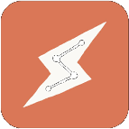
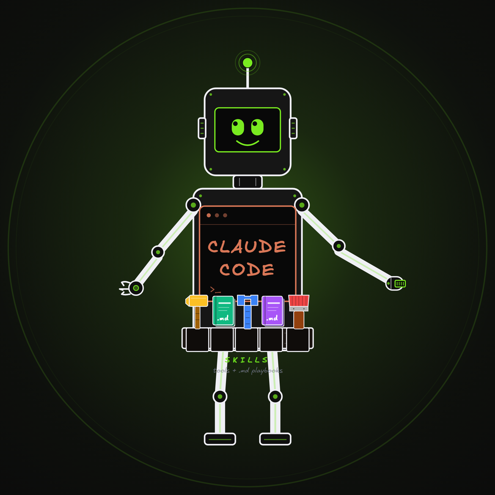

Let's get your AI Employee Builder running
Pick the app you use below and you'll only see your steps — short, guided, tick them off as you go. If you ever get stuck, Claude itself will walk you through it.
 Claude CodeRuns inside VS Code. Follow the guided steps to install the plugin + MCP shell.
Use Claude Code →
Claude CodeRuns inside VS Code. Follow the guided steps to install the plugin + MCP shell.
Use Claude Code →

Claude CoworkRuns in the Claude desktop app — no terminal. Add our plugin, paste your key in chat, done. All point-and-click. 🤝 Set up Cowork →claude terminal. Steps 3 & 5 match this.1✓ Install Claude CodeGet the editor + extension running
This is the one part you set up by hand — and once Claude Code is running, Claude can do almost everything after this for you. Three quick things:

Now that Claude Code is installed, you barely have to lift a finger. Paste this into the Claude Code chat — Claude does the whole install itself, and if it ever hits something only you can do (paste your key, click a button), it walks you through it one clear step at a time. (Have your license key ready — Step 2 below shows where to find it.)
You are setting up AI Employee Builder in my Claude Code for me. The new setup uses a free thin plugin shell plus a hosted licensed MCP server. Do as much as you can yourself, verify every step, and only hand work to me when Claude Code requires a human click, slash command, or license-key paste. MY SETUP - read carefully: I'm in the Claude Code VS Code extension. You CANNOT type slash commands into my chat for me. When something can ONLY be done by me, give me a short numbered "do this" instruction with the exact text to paste or exact thing to click, then STOP and wait for me to confirm. Your standing rule: use the simplest path. Try terminal commands when they are available. If they fail or my version does not support them, switch to the VS Code Manage Plugins panel and guide me one click at a time. 1. NODE.JS - Run `node --version`. If Node is missing or older than v18, install the latest LTS for me with the right package manager for my OS, then confirm `node --version` works. 2. THIN PLUGIN SHELL - Install the free AI Employee Builder shell. It contains setup guidance and the MCP proxy, not the paid skill bodies. Try the terminal first: claude plugin marketplace add https://github.com/the2hourclo/aieb-thin-plugin claude plugin install ai-employee-builder@aieb-thin-plugin --scope user If that fails, walk me through `/plugin` -> Manage Plugins -> Marketplaces -> add the GitHub marketplace -> Plugins -> install `ai-employee-builder` -> choose "Install for you" -> reload. 3. SETUP - Run `/setup-aieb`. Ask me to paste my Lemon Squeezy license key when needed. The command should write the local MCP config with: AIEB_MCP_URL=https://aieb-gated-mcp.vercel.app/mcp AIEB_ACTIVATE_URL=https://aieb-gated-mcp.vercel.app/activate 4. ACTIVATE & TEST - Start or reload Claude Code so the MCP proxy runs. On first use it should call the `/activate` endpoint, bind this computer to the license, store a local Lemon Squeezy instance ID, and then call the hosted MCP with both the license key and instance ID. The plugin installs auto-routing skill stubs, so test by simply naming a skill - say "business x-ray" or "create a skill" - and confirm it routes, fetches its instructions from the MCP, and runs. (Low-level fallback: call the `get_skill` MCP tool for `meta-create-skill`, path `SKILL.md`.) 5. CONFIRM - Confirm the local plugin holds only thin stubs (no paid skill bodies) and that the real instructions are fetched from the MCP server at runtime. If the license is invalid, expired, cancelled, or for the wrong product, tell me plainly and show the renewal/help response instead of trying to bypass it. Important: Do not use SkillStack for this AIEB install. SkillStack was the old delivery path. The current path is thin plugin shell + hosted LemonSqueezy-gated MCP. After each step, tell me whether it worked, or show the error and exactly how you're fixing it. Start now with step 1.
1✓ Install the pluginOne marketplace, one install — inside the desktop app
Everything happens in the Claude desktop app (Pro, Max, or Team) — no terminal, nothing to download.
2✓ Connect your licenseOne chat message + one paste
noreply@lemonsqueezy.com) — or grab it any time at app.lemonsqueezy.com/my-orders.Claude saves the key on your own machine and runs a real test fetch to confirm you're connected. The key never leaves your device.
check my setup in any chat and Claude verifies it with you.3✓ Try your first skillProve the connection works
In the same chat, just say:
4✓ Install Draw.io DesktopOpens the maps your AI Employees draw
Your AI Employees deliver business maps as .drawio files — Draw.io Desktop is the free app that opens, edits, and exports them (no browser, no account).
5✓ Connect the Draw.io connectorSo Claude can draw straight into it
🎉 You're all set
Your AI Employees are connected. Start any Cowork chat and say business x-ray, create a skill, or what should I build next.
check my setup in any Cowork chat — Claude diagnoses the connection with you and offers the fix. Still stuck? Email rashid@thepeakperformer.io.2✓ Find your license keyIt's in your Lemon Squeezy email
When you subscribed through Lemon Squeezy, you were issued a license key — a line of letters and numbers like this:
Two places to find it:
noreply@lemonsqueezy.com). Your key is printed inside. Can't find it? Check spam, or search your inbox for "Chief Leverage Officer" or "license".3✓ Install the MCP shellA free local wrapper, not the paid skill bodies
What you are installing: a tiny local shell that sets up the MCP connection and proxy. The AIEB workflows and valuable instructions stay on the server and load only after your license is checked.
/plugin, then click Manage Plugins.4✓ Add your license to MCPPaste your key once
The shell connects to the hosted MCP server. Run the setup command and paste your Lemon Squeezy key when Claude asks.
The command writes the MCP config with AIEB_MCP_URL, AIEB_ACTIVATE_URL, and your local AIEB_LICENSE_KEY.
5✓ Test the hosted skillMake sure AIEB loads from MCP
Reload Claude Code, then just name a skill — the plugin's skills route on their own and pull their real instructions from the MCP. The first call activates this computer and stores a local instance ID.
Or try create a skill or onboard me. Each one loads from the hosted MCP after your license is checked — you don't call any tool by hand.
6✓ Set up Draw.ioInstall the app + connect the MCP so your AI Employees can draw
Your onboarding builds an AI Employee Map — a .drawio diagram of your business — and the Business X-Ray draws more as you go. Two quick parts: install the app to open the maps, and connect the Draw.io MCP so your AI Employees can draw and edit them for you.
Part A — Install Draw.io Desktop (the free app that opens, edits, and exports .drawio files locally, no browser or account):
...-windows-installer.exe for Windows, ...-universal.dmg for Mac, or the .deb / .AppImage for Linux..drawio file opens with a double-click.Part B — Connect the Draw.io MCP (lets Claude create and edit diagrams live, instead of just handing you a file). It's a standard custom connector at this URL:
/mcp, choose Add connector (HTTP), and paste the URL above.drawio tools now show up — say "draw this as a diagram" and Claude builds it in Draw.io.drawio tools load..drawio files in your workspace folders — nothing to upload.7✓ Onboard — build your first skillThe fun part
In your Claude session (panel or terminal), simply type:
The MCP-loaded AIEB workflow runs a guided, three-phase setup — you just answer its questions:
| Phase | What happens |
|---|---|
| 1. Scaffold | Sets up your authoring folders (.claude/skills, agents, commands, hooks) and a workspace guide |
| 2. Map your business | Lays out the rooms of your business — marketing, sales, delivery — as department folders plus a business map, so every AI Employee you build has a clear place to work and read from |
| 3. Build your first skill | X-rays those rooms to find the highest-leverage thing to automate, then creates your first custom skill and tests it |
Takes ~10 minutes. End state: your authoring workspace is set up and your first custom skill is built and running — plus you know exactly how to build more (just say create a skill for X anytime).
You've built your first one. From here the roadmap shows you the whole path — make it reliable, connect skills into a system, hand work to an agent, put it on autopilot — one step at a time, with copy-paste prompts for common jobs (content, sales, client delivery, admin). Inside Claude Code you can just say what's next anytime; this page is the map.

Plug into the people building alongside you — share what you're building, get feedback on your AI Employees' output, and join the monthly group call. It's included with your subscription.
Open the community ↗Fastest fix is to let Claude diagnose it live. Copy this, paste it into Claude Code, and add what you saw where it says [describe...].
I'm installing the AI Employee Builder MCP shell in Claude Code and I'm stuck. Here's what happened: [describe the error or what you see on screen]. Please help me fix it. Background on how this install works: - The local plugin is a thin shell. It should contain setup guidance plus a Node.js MCP proxy, not the paid skill bodies. - The paid AIEB instructions come from https://aieb-gated-mcp.vercel.app/mcp through the `get_skill` MCP tool. - The proxy activates my Lemon Squeezy license through https://aieb-gated-mcp.vercel.app/activate, stores a local instance ID, then sends both the license key and instance ID on MCP calls. - Do not use SkillStack for this AIEB install. That was the old delivery path. Check anything you can: Node.js version, whether the thin plugin is installed, whether `.mcp.json` has AIEB_MCP_URL, AIEB_ACTIVATE_URL, and AIEB_LICENSE_KEY, and whether the aieb MCP server is visible. Then explain the problem in plain English and give me the exact next step. If Claude Code needs me to type a slash command or paste a license key, tell me exactly what to do and wait.
| What you see | The fix |
|---|---|
| A new command doesn't appear | You skipped a reload. Type /reload-plugins, or reload the window (Ctrl/Cmd+Shift+P → "Reload Window"). |
Install fails mentioning node | Node.js isn't installed. Install the LTS build from nodejs.org, restart VS Code, retry. |
| The MCP says 401 or unauthorized | Check that AIEB_LICENSE_KEY is present, the key belongs to AI Employee Builders, and the subscription is active. |
| "Key bound to other plugin" | That key is for a different product — each key activates one plugin. Re-check the key in your Lemon Squeezy email. |
| "Expired" or "Revoked" | Your subscription lapsed. Renew at My Orders, then reload Claude Code and try the MCP call again. |
| Skills don't show up after install | Reload Claude Code. If the plugin is installed but the MCP is missing, check the plugin's .mcp.json config. |
| The local plugin folder looks tiny | That is expected. The local plugin is only the shell; paid skill instructions load from the hosted MCP. |
| The MCP activates once, then fails on another machine | The license may have reached its activation limit. Manage the order in Lemon Squeezy or email support. |
/plugin not recognized | Claude Code is outdated. Update the extension (Extensions panel → Claude Code → update), reload, retry. |
Do I need to know how to code?
Why install a thin plugin plus MCP?
Does my license key work on more than one computer?
Why does it need Node.js?
How do updates work?
Can I use this in Claude Cowork?
the2hourclo/aieb-thin-plugin), then say set up my AI Employee Builder in a Cowork chat and paste your license key when Claude asks. The plugin carries both the skill routing and the connector to your AI Employees. If the connector doesn't light up on your machine, the Cowork section above has a fallback extension (.mcpb) that does the same job. Don't paste the MCP URL into Custom Connectors (that's OAuth-only and can't take your key).